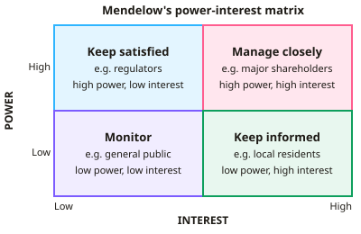

A-level Business Year 13 · Topic 6
Stakeholders, ethics and corporate responsibility
This topic looks at who a business really serves, and how far it should go beyond making a profit.
We weigh the shareholder and stakeholder views, examine corporate social responsibility, and work through ethical dilemmas in strategy.
- 3 subtopics
- 96 questions
- Free: 6.1 notes and 10 questions
In this topic
- 6.1Shareholders and stakeholders: influence and conflict in strategic decisionsFree below · 33 questions
- 6.2Corporate social responsibility and strategyOpen in Full Marks · 30 questions
- 6.3Business ethics in strategic decision-makingOpen in Full Marks · 33 questions
6.1 · Free notes
Shareholders and stakeholders: influence and conflict in strategic decisions

Key points
- A stakeholder is any individual or group affected by, or with an interest in, a business's activities. Internal stakeholders are owners, managers and employees. External stakeholders are customers, suppliers, lenders, government, local community and pressure groups.
- Shareholders own a limited company. They gain through dividends and capital gain (a rising share price), and they vote at the AGM. Their liability is limited to the amount invested.
- Dividend per share = total dividends ÷ number of shares. Dividend yield (%) = dividend per share ÷ share price × 100. For example, 20p on a £5.00 share gives a 4% yield.
- The shareholder concept (Friedman) says the main aim is to maximise shareholder wealth within the law. The stakeholder concept (Freeman) says managers should balance the interests of all affected groups, because long-term success depends on their support.
- Mendelow's matrix maps stakeholders by power and interest. High power and high interest means manage closely (key players). High power and low interest means keep satisfied. Low power and high interest means keep informed. Low power and low interest means monitor.
- Stakeholder power comes from legal rights (shareholder votes, regulation), economic control (a key supplier or customer), expertise, or the ability to damage reputation through media and social campaigns. Power and interest change over time, so mapping must be reviewed.
- Typical conflicts include shareholders wanting dividends against employees wanting higher pay. Customers want low prices while shareholders want margins. The local community opposes expansion that managers see as growth. Shareholders may push for short-termism (cuts to R&D and training) at the expense of long-term investment.
- The principal–agent problem arises from the separation of ownership and control. Managers (agents) may pursue their own goals, such as bonuses or empire-building, rather than shareholders' (principals'). Remedies are performance-related pay, share options, non-executive directors and the UK Corporate Governance Code.
- Institutional investors (pension funds, asset managers) and activist investors hold large voting blocks and can challenge the board. ESG investing increases pressure on strategy. Section 172 of the Companies Act 2006 requires directors to promote the company's success for its members while having regard to employees, suppliers, customers, community, environment and reputation.
- Evaluation: the best strategy often balances stakeholders, because many interests are win-win in the long run, for example a trained, well-paid workforce improving productivity. The balance depends on the firm's ownership (plc, family firm, social enterprise), the time horizon, the strength of the stakeholder and the scale of the decision (for example a plant closure).
In more detail
- Worked dividend yield: a 15p dividend on a share priced at £3.00 gives a yield of 5%.
- Principal–agent example: executives paid bonuses on the short-term share price may favour share buybacks over long-term investment, against the owners' long-term interests.
- Say on pay: shareholders in UK quoted companies vote on directors' pay policy, giving them a direct check on executive rewards.
- Win-win example: paying a real Living Wage raises costs, but it can cut staff turnover and recruitment costs, benefiting both employees and shareholders.
Practice
Shareholders and stakeholders: influence and conflict in strategic decisions: 10 questions
Pick an answer to check it, or open the answer for the explanation.
1. Which best describes a stakeholder of a business?
- Only customers who buy its products
- Only people employed by the business
- Any group affected by or interested in the business's activities
- Only the owners who hold shares in the company
Show answer
C: Any group affected by or interested in the business's activities. A stakeholder is any individual or group affected by, or with an interest in, the business. This includes employees, customers, suppliers, the community and government as well as shareholders.
2. A plc with 50 million shares in issue pays total dividends of £7.5 million. What is the dividend per share?
- 1.5p
- 37.5p
- 6.7p
- 15p
Show answer
D: 15p. Dividend per share = total dividends ÷ number of shares = £7,500,000 ÷ 50,000,000 = £0.15, which is 15p.
3. A share costs £5.00 and the company pays a dividend of 20p per share. What is the dividend yield?
- 20%
- 25%
- 4%
- 0.25%
Show answer
C: 4%. Dividend yield = dividend per share ÷ share price × 100 = 0.20 ÷ 5.00 × 100 = 4%.
4. In Mendelow's matrix, how should a stakeholder with high power but low interest be treated?
- Kept satisfied
- Kept informed
- Managed closely as a key player
- Monitored with minimal effort
Show answer
A: Kept satisfied. High power and low interest means keep satisfied: they can affect the business if they become concerned, but they are not actively involved. Regulators are a typical example.
5. The principal–agent problem in a large plc occurs when:
- Shareholders try to run the business day to day
- Employees refuse to work for managers
- Customers cannot identify who owns the firm
- Managers pursue their own goals instead of shareholders' interests
Show answer
D: Managers pursue their own goals instead of shareholders' interests. Ownership is separated from control. Managers (agents) may prioritise bonuses or status rather than the returns wanted by shareholders (principals).
6. Which action is most likely to reduce the principal–agent problem?
- Removing non-executive directors from the board
- Paying directors a fixed salary whatever the results
- Linking directors' pay to long-term share performance
- Reducing shareholders' voting rights
Show answer
C: Linking directors' pay to long-term share performance. Performance-related pay and share options align directors' rewards with shareholder returns. Non-executive directors also scrutinise management, so removing them would worsen the problem.
7. A listed retailer announces it will close 20 stores to boost profit. Which conflict is most direct?
- Shareholders seeking higher returns against employees seeking job security
- Government against shareholders over dividends
- Customers against competitors over price
- Suppliers against lenders over interest rates
Show answer
A: Shareholders seeking higher returns against employees seeking job security. Closures raise profit and returns for shareholders but threaten employees' jobs. The local community is also affected, which is a classic shareholder and stakeholder conflict.
8. How does the stakeholder concept differ from the shareholder concept?
- It says only shareholders' interests matter
- It says profit should never be pursued
- It argues managers should balance the interests of all affected groups
- It applies only to sole traders
Show answer
C: It argues managers should balance the interests of all affected groups. The stakeholder concept says long-term success depends on balancing the interests of all groups. The shareholder concept (Friedman) focuses on maximising owners' wealth.
9. Which statement about Section 172 of the Companies Act 2006 is correct?
- Directors must maximise short-term profit above all else
- Directors must give employees equal voting rights
- Directors must consider only shareholders' interests
- Directors must promote the company's success while having regard to wider stakeholders
Show answer
D: Directors must promote the company's success while having regard to wider stakeholders. Section 172 requires directors to act for the benefit of members as a whole, having regard to employees, suppliers, customers, community, environment, long-term consequences and reputation.
10. Dividend per share rises from 12p to 15p while the share price falls from £3.00 to £2.50. What happens to the dividend yield?
- Rises from 4% to 5%
- Stays at 4%
- Falls from 4% to 3%
- Rises from 4% to 6%
Show answer
D: Rises from 4% to 6%. Before: 12p ÷ £3.00 = 4%. After: 15p ÷ £2.50 = 6%. A higher dividend and a lower share price both raise the yield.
Keep going in Full Marks
Full Marks has 33 questions on Shareholders and stakeholders: influence and conflict in strategic decisions (23 more than here), set out in practice levels. You also get notes and 3D models for all 3 subtopics of Stakeholders, ethics and corporate responsibility, plus games, timed exams and past papers.